Research Topic One
Add a concise description of the questions you are interested in.
ACADEMIC HOMEPAGE
Computer Science · Research
Your University · Your Research Group
Welcome to my academic homepage. I am interested in building intelligent systems and exploring the intersection of machine learning, multimodal understanding, and generative models.

Replace this image with your profile photo.
01
I am a computer science student / researcher at [University]. My current work focuses on [your research topics]. I enjoy understanding problems from first principles and turning ideas into practical systems.
This paragraph is placeholder copy. Replace it with a short introduction about your background, current position, and research goals.
02
Add a concise description of the questions you are interested in.
Describe a second research direction or a methodological interest.
Add another topic, or remove this item if it is not needed.
03
Your papers will appear here.
Add title, authors, venue, year, and links to paper / code.04
A short summary of the problem, approach, and your contribution.
Project link ↗Add another project, including demos, repositories, or related publications.
Project link ↗05
20XX — Present
Department / School · Advisor (optional)
20XX — 20XX
Organization · Role · Brief description
06
Add a research update, publication, award, or other announcement.
Keep updates concise and list the newest item first.
SAY HELLO
For research discussions, collaboration, or just to say hello.
YOUR_EMAIL@example.com ↗